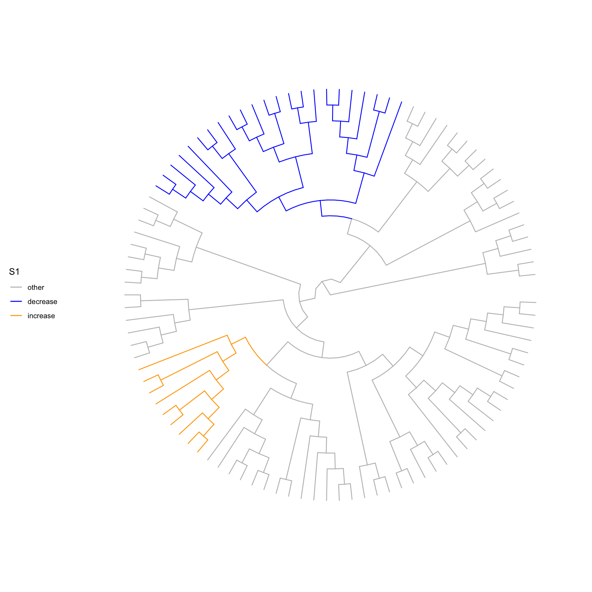
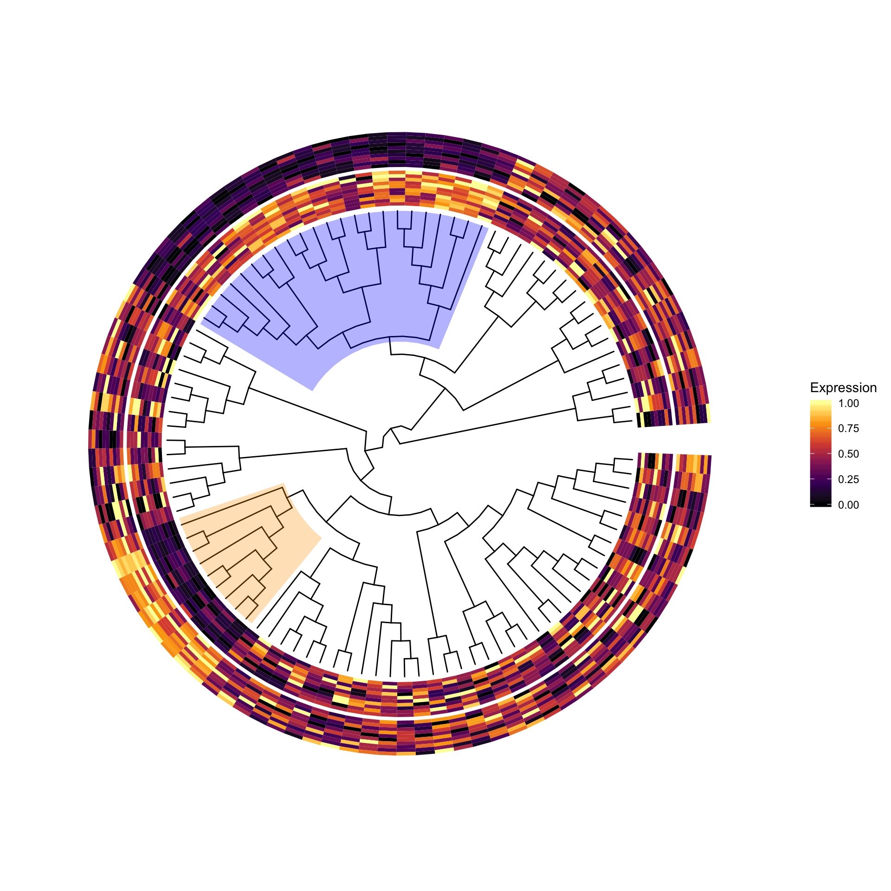

animation
fionarhuang
2019-12-03
Last updated: 2019-12-03
Checks: 6 1
Knit directory: treeclimbR_animation/
This reproducible R Markdown analysis was created with workflowr (version 1.4.0). The Checks tab describes the reproducibility checks that were applied when the results were created. The Past versions tab lists the development history.
The R Markdown is untracked by Git. To know which version of the R Markdown file created these results, you’ll want to first commit it to the Git repo. If you’re still working on the analysis, you can ignore this warning. When you’re finished, you can run wflow_publish to commit the R Markdown file and build the HTML.
Great job! The global environment was empty. Objects defined in the global environment can affect the analysis in your R Markdown file in unknown ways. For reproduciblity it’s best to always run the code in an empty environment.
The command set.seed(20191203) was run prior to running the code in the R Markdown file. Setting a seed ensures that any results that rely on randomness, e.g. subsampling or permutations, are reproducible.
Great job! Recording the operating system, R version, and package versions is critical for reproducibility.
Nice! There were no cached chunks for this analysis, so you can be confident that you successfully produced the results during this run.
Great job! Using relative paths to the files within your workflowr project makes it easier to run your code on other machines.
Great! You are using Git for version control. Tracking code development and connecting the code version to the results is critical for reproducibility. The version displayed above was the version of the Git repository at the time these results were generated.
Note that you need to be careful to ensure that all relevant files for the analysis have been committed to Git prior to generating the results (you can use wflow_publish or wflow_git_commit). workflowr only checks the R Markdown file, but you know if there are other scripts or data files that it depends on. Below is the status of the Git repository when the results were generated:
Ignored files:
Ignored: .DS_Store
Ignored: .Rproj.user/
Untracked files:
Untracked: .Renviron
Untracked: analysis/animation.Rmd
Untracked: analysis/test.Rmd
Untracked: docs/figure/
Untracked: output/pk.gif
Untracked: output/pk_1.gif
Note that any generated files, e.g. HTML, png, CSS, etc., are not included in this status report because it is ok for generated content to have uncommitted changes.
There are no past versions. Publish this analysis with wflow_publish() to start tracking its development.
knitr::opts_chunk$set(echo = TRUE, warning=FALSE, message = FALSE,
fig.width = 10, fig.height = 10)Load packages
suppressPackageStartupMessages({
library(ggplot2)
library(gganimate)
library(ggtree)
library(dplyr)
library(treeclimbR)
library(ape)
library(TreeHeatmap)
library(ggnewscale)
})Data simulation
We simulate a scenario (S1) that only two branches on the tree have differential abundance (signal) between samples from two groups. The data is simulated by swapping proportions of two branches, and leaves in the same branch have the same fold change.
# generate a random tree
set.seed(3)
n <- 100
tr <- rtree(n)
# generate a random probility vector for leaves
p <- rbeta(n = n, shape1 = 2, shape2 = 5)
p <- p/sum(p)
names(p) <- tr$tip.label
# simulate counts by sampling from multinomial distribution
lse <- simMult(pr = p, libSize = 1000, tree = tr,
minTip.A = 5, minTip.B = 5,
ratio = 3, scenario = "S1",
nSam = c(10, 10))Viz simulated pattern
The two signal branches are colored on the tree.
# signal branches
br <- metadata(lse)$branch
br A B ratio A_tips B_tips A_prop B_prop
1 185 116 3.009217 9 23 0.0846 0.2547viewSim(lse, branch.length = "none", layout = "circular", zoom_scale = 1)
# counts
count <- assays(lse)[[1]]
# scale counts
scale_count <- t(apply(count, 1, FUN = function(x) {
xx <- scale(x)
(xx - min(xx))/(max(xx)-min(xx))
}))
rownames(scale_count) <- rownames(count)
colnames(scale_count) <- colnames(count)
head(scale_count) C1_1 C1_2 C1_3 C1_4 C1_5 C1_6 C1_7
t73 0.00000000 1.0000000 0.0000000 0.0000000 0.1666667 0.3333333 0.1666667
t67 1.00000000 0.4000000 1.0000000 1.0000000 0.8000000 0.6000000 0.6000000
t4 0.08333333 0.4166667 0.5000000 0.5000000 0.5000000 0.4166667 0.0000000
t76 0.66666667 0.4444444 0.3333333 0.0000000 0.2222222 0.4444444 0.4444444
t50 0.30769231 0.1538462 0.2307692 1.0000000 0.3846154 0.9230769 0.3076923
t17 0.77777778 0.0000000 0.3333333 0.5555556 0.5555556 0.5555556 0.6666667
C1_8 C1_9 C1_10 C2_1 C2_2 C2_3 C2_4
t73 0.1666667 0.6666667 0.1666667 0.1666667 0.6666667 0.3333333 0.6666667
t67 0.6000000 0.2000000 0.4000000 0.2000000 0.6000000 0.4000000 0.2000000
t4 0.5833333 0.7500000 0.9166667 0.3333333 0.9166667 0.6666667 0.5000000
t76 0.2222222 0.0000000 0.3333333 0.3333333 0.4444444 0.0000000 0.4444444
t50 0.3076923 0.1538462 0.3076923 0.8461538 0.3846154 0.5384615 0.0000000
t17 0.1111111 0.7777778 0.3333333 0.6666667 0.6666667 0.3333333 0.2222222
C2_5 C2_6 C2_7 C2_8 C2_9 C2_10
t73 0.3333333 0.6666667 0.00000000 0.1666667 0.1666667 1.0000000
t67 0.4000000 0.6000000 0.00000000 0.4000000 0.6000000 0.4000000
t4 1.0000000 0.3333333 0.58333333 0.7500000 0.7500000 0.5833333
t76 1.0000000 0.7777778 0.33333333 0.6666667 0.1111111 0.4444444
t50 0.6153846 0.4615385 0.07692308 0.3076923 0.4615385 0.3846154
t17 1.0000000 0.3333333 0.66666667 0.3333333 0.6666667 0.2222222# fig: tree
fig_0 <- ggtree(tr, branch.length = "none", layout = "circular") +
geom_hilight(node = br$A, fill = "orange", alpha = 0.3) +
geom_hilight(node = br$B, fill = "blue", alpha = 0.3) +
new_scale_fill()
# fig: tree + heatmap
vv <- gsub(pattern = "_.*", "", colnames(count))
names(vv) <- colnames(scale_count)
fig <- TreeHeatmap(tree = tr, tree_fig = fig_0, hm_data = scale_count,
column_split = vv, rel_width = 0.3, tree_hm_gap = 0.3) +
scale_fill_viridis_c(option = "B")
fig
data aggregation
all_node <- showNode(tree = rowTree(lse), only.leaf = FALSE)
tse <- aggValue(x = lse, rowLevel = all_node)
colData(tse)DataFrame with 20 rows and 1 column
group
<factor>
C1_1 C1
C1_2 C1
C1_3 C1
C1_4 C1
C1_5 C1
... ...
C2_6 C2
C2_7 C2
C2_8 C2
C2_9 C2
C2_10 C2Wilcox sum rank test (optional)
# wilcox.test
test.func <- function (X, Y) {
Y <- as.numeric(factor(Y))
obj <- apply(X, 1, function(x) {
p.value <- suppressWarnings(wilcox.test(x ~ Y)$p.value)
e.sign <- sign(mean(x[Y == 2]) - mean(x[Y == 1]))
c(p.value, e.sign)
})
return(list(p.value=obj[1, ], e.sign=obj[2, ]))
}
Y <- colData(tse)$group
X <- assays(tse)[[1]]
resW <- test.func(X,Y)
outW <- data.frame(node = rowLinks(tse)$nodeNum,
pvalue = resW$p.value,
sign = resW$e.sign)
### run treeclimbR
# get candidates
cand <- getCand(tree = rowTree(tse), score_data = outW,
node_column = "node", p_column = "pvalue",
sign_column = "sign", message = TRUE)
# evaluate candidates
best <- evalCand(tree = rowTree(tse), levels = cand$candidate_list,
score_data = outW, node_column = "node",
p_column = "pvalue", sign_column = "sign")
best$level_info
# the detected nodes
loc <- best$output[best$output$signal.node, ][["node"]]
locedgeR
res <- runDA(TSE = tse, feature_on_row = TRUE,
assay = 1, filter_min_count = 1,
design_terms = "group")
out <- topNodes(object = res, n = Inf)
head(out) node logFC logCPM LR PValue FDR
alias_185 185 1.6740161 17.36920 974.1747 7.376076e-214 1.467839e-211
alias_186 186 1.6744889 17.23314 887.3030 5.649714e-195 5.621465e-193
alias_116 116 -1.4258902 17.37308 707.1812 8.205566e-156 5.443026e-154
alias_187 187 1.6351580 16.83822 635.8307 2.695901e-140 1.341211e-138
alias_188 188 1.6442158 16.70943 572.9611 1.274096e-126 5.070904e-125
alias_172 172 0.9244536 18.14995 558.6270 1.672213e-123 5.546174e-122dim(out)[1] 199 6Run treeclimbR
# treeclimbR
cand <- getCand(tree = rowTree(tse), score_data = out,
node_column = "node", p_column = "PValue",
sign_column = "logFC", message = TRUE)
best <- evalCand(tree = rowTree(tse), levels = cand$candidate_list,
score_data = out, node_column = "node",
sign_column = "logFC",
p_column = "PValue")
best$level_info t r is_valid method limit_rej level_name rej_leaf rej_node
1 0.01 0.54000000 FALSE BH 0.05 0.01 32 7
2 0.05 1.50000000 TRUE BH 0.05 0.05 32 2
3 0.10 1.50000000 TRUE BH 0.05 0.1 32 2
4 0.15 1.60000000 TRUE BH 0.05 0.15 34 3
5 0.20 1.60000000 TRUE BH 0.05 0.2 34 3
6 0.25 1.60000000 TRUE BH 0.05 0.25 34 3
7 0.30 1.60000000 TRUE BH 0.05 0.3 34 3
8 0.35 1.60000000 TRUE BH 0.05 0.35 34 3
9 0.40 1.60000000 TRUE BH 0.05 0.4 34 3
10 0.45 1.60000000 TRUE BH 0.05 0.45 34 3
11 0.50 1.60000000 TRUE BH 0.05 0.5 34 3
12 0.55 1.60000000 TRUE BH 0.05 0.55 34 3
13 0.60 1.60000000 TRUE BH 0.05 0.6 34 3
14 0.65 1.60000000 TRUE BH 0.05 0.65 34 3
15 0.70 1.60000000 TRUE BH 0.05 0.7 34 3
16 0.75 1.60000000 TRUE BH 0.05 0.75 34 3
17 0.80 1.60000000 TRUE BH 0.05 0.8 34 3
18 0.85 1.60000000 TRUE BH 0.05 0.85 34 3
19 0.90 1.60000000 TRUE BH 0.05 0.9 34 3
20 0.95 1.60000000 TRUE BH 0.05 0.95 34 3
21 1.00 1.60000000 TRUE BH 0.05 1 34 3
22 NA 0.02592593 TRUE BH 0.05 leaf 34 34
rej_pseudo_leaf rej_pseudo_node
1 32 5
2 32 2
3 32 2
4 34 2
5 34 2
6 34 2
7 34 2
8 34 2
9 34 2
10 34 2
11 34 2
12 34 2
13 34 2
14 34 2
15 34 2
16 34 2
17 34 2
18 34 2
19 34 2
20 34 2
21 34 2
22 34 27loc <- best$output[best$output$signal.node, ][["node"]]
loc[1] 185 116 115br A B ratio A_tips B_tips A_prop B_prop
1 185 116 3.009217 9 23 0.0846 0.2547animation
The chunk below is slow when knit to html. It would be faster to directly run code in console, save the .gtf file and knit by directly include the gtf file.
# tree
tree <- rowTree(tse)
leaf <- showNode(tree = tree, only.leaf = TRUE)
nleaf <- length(leaf)
# the candidate list
nodL <- cand$candidate_list
t <- names(nodL)
nt <- length(nodL)
mm <- matrix(NA, nrow = nleaf, ncol = nt)
colnames(mm) <- paste("row_", seq_len(nt), sep = "")
#
path <- matTree(tree = tree)
r1 <- lapply(leaf, FUN = function(x) {
which(path == x, arr.ind = TRUE)[, "row"]
})
for (j in seq_len(nt)) {
rj <- lapply(nodL[[j]], FUN = function(x) {
which(path == x, arr.ind = TRUE)[, "row"]
})
for (i in seq_len(nleaf)) {
# leaf i: which row of `path`
ni <- r1[[i]]
ul <- lapply(rj, FUN = function(x) {
any(ni %in% x)
})
# the ancestor of leaf i: which node in candidate j
ll <- which(unlist(ul))
if (length(ll) == 1) {
mm[i, j] <- ll
}
}}
nn <- lapply(seq_len(ncol(mm)), FUN = function(x) {
mx <- mm[, x]
xx <- nodL[[x]][mx]
cbind.data.frame(xx, rep(t[x], length(xx)),
stringsAsFactors = FALSE)
})
df <- do.call(rbind.data.frame, nn)
colnames(df) <- c("node", "threshold")
head(df)
pd <- df %>%
left_join(y = fig_0$data, by = "node") %>%
select(threshold, x, y) %>%
mutate(t = factor(threshold, levels = c("leaf", setdiff(t, "leaf"))))
# pk <- fig_0 +
# geom_point(data = pd, aes(x, y),
# color = "red", size = 3) +
# theme(plot.title = element_text(size = 25)) +
# # transition_time(time = threshold) +
# transition_states(states = t,
# state_length = 8,
# transition_length = 2,
# wrap = FALSE) +
# shadow_wake(wake_length = 0.1, alpha = FALSE,
# wrap = FALSE) +
# labs(title = "t = {closest_state}") +
# enter_fade() +
# exit_fade()
#
# anim_save("output/pk.gif", pk)
pk_1 <- fig +
geom_point(data = pd, aes(x, y),
color = "red", size = 3) +
theme(plot.title = element_text(size = 25)) +
transition_states(states = t,
state_length = 8,
transition_length = 2,
wrap = FALSE) +
shadow_wake(wake_length = 0.1, alpha = FALSE,
wrap = FALSE) +
labs(title = "t = {closest_state}") +
enter_fade() +
exit_fade()
anim_save("output/pk_1.gif", pk_1, height = 800, width = 800)
sessionInfo()R version 3.6.1 (2019-07-05)
Platform: x86_64-apple-darwin15.6.0 (64-bit)
Running under: macOS Mojave 10.14.4
Matrix products: default
BLAS: /Library/Frameworks/R.framework/Versions/3.6/Resources/lib/libRblas.0.dylib
LAPACK: /Library/Frameworks/R.framework/Versions/3.6/Resources/lib/libRlapack.dylib
locale:
[1] en_US.UTF-8/en_US.UTF-8/en_US.UTF-8/C/en_US.UTF-8/en_US.UTF-8
attached base packages:
[1] parallel stats4 stats graphics grDevices utils datasets
[8] methods base
other attached packages:
[1] ggnewscale_0.4.0 TreeHeatmap_0.1.0
[3] ape_5.3 treeclimbR_0.1.1
[5] TreeSummarizedExperiment_1.0.3 SingleCellExperiment_1.7.11
[7] SummarizedExperiment_1.15.9 DelayedArray_0.11.8
[9] BiocParallel_1.19.4 matrixStats_0.55.0
[11] Biobase_2.45.1 GenomicRanges_1.37.17
[13] GenomeInfoDb_1.21.2 IRanges_2.19.17
[15] S4Vectors_0.23.25 BiocGenerics_0.31.6
[17] dplyr_0.8.3 ggtree_2.1.1
[19] gganimate_1.0.4 ggplot2_3.2.1
loaded via a namespace (and not attached):
[1] backports_1.1.5 circlize_0.4.8
[3] diffcyt_1.5.11 workflowr_1.4.0
[5] plyr_1.8.4 igraph_1.2.4.1
[7] ConsensusClusterPlus_1.49.0 lazyeval_0.2.2
[9] splines_3.6.1 flowCore_1.51.8
[11] fda_2.4.8 TH.data_1.0-10
[13] digest_0.6.21 htmltools_0.4.0
[15] viridis_0.5.1 magick_2.2
[17] magrittr_1.5 CytoML_1.11.10
[19] cluster_2.1.0 ks_1.11.5
[21] limma_3.41.18 ComplexHeatmap_2.1.1
[23] RcppParallel_4.4.4 R.utils_2.9.0
[25] sandwich_2.5-1 flowWorkspace_3.33.10
[27] prettyunits_1.0.2 colorspace_1.4-1
[29] rrcov_1.4-7 xfun_0.10
[31] crayon_1.3.4 RCurl_1.95-4.12
[33] jsonlite_1.6 hexbin_1.27.3
[35] graph_1.63.0 lme4_1.1-21
[37] zeallot_0.1.0 dirmult_0.1.3-4
[39] survival_2.44-1.1 zoo_1.8-6
[41] glue_1.3.1 flowClust_3.23.0
[43] gtable_0.3.0 zlibbioc_1.31.0
[45] XVector_0.25.0 GetoptLong_0.1.7
[47] ggcyto_1.13.2 IDPmisc_1.1.19
[49] Rgraphviz_2.29.0 shape_1.4.4
[51] DEoptimR_1.0-8 scales_1.0.0
[53] mvtnorm_1.0-11 edgeR_3.27.13
[55] Rcpp_1.0.2 viridisLite_0.3.0
[57] progress_1.2.2 clue_0.3-57
[59] tidytree_0.2.9 openCyto_1.23.5
[61] mclust_5.4.5 FlowSOM_1.17.3
[63] tsne_0.1-3 RColorBrewer_1.1-2
[65] ellipsis_0.3.0 pkgconfig_2.0.3
[67] XML_3.98-1.20 R.methodsS3_1.7.1
[69] farver_1.1.0 flowViz_1.49.3
[71] locfit_1.5-9.1 labeling_0.3
[73] reshape2_1.4.3 flowStats_3.43.9
[75] tidyselect_0.2.5 rlang_0.4.0
[77] munsell_0.5.0 tools_3.6.1
[79] evaluate_0.14 stringr_1.4.0
[81] yaml_2.2.0 knitr_1.25
[83] fs_1.3.1 robustbase_0.93-5
[85] purrr_0.3.3 RBGL_1.61.0
[87] nlme_3.1-140 R.oo_1.22.0
[89] compiler_3.6.1 png_0.1-7
[91] treeio_1.11.0 tibble_2.1.3
[93] tweenr_1.0.1 pcaPP_1.9-73
[95] stringi_1.4.3 lattice_0.20-38
[97] Matrix_1.2-17 nloptr_1.2.1
[99] vctrs_0.2.0 pillar_1.4.2
[101] lifecycle_0.1.0 BiocManager_1.30.8
[103] GlobalOptions_0.1.1 data.table_1.12.6
[105] cowplot_1.0.0 bitops_1.0-6
[107] corpcor_1.6.9 R6_2.4.0
[109] latticeExtra_0.6-28 KernSmooth_2.23-15
[111] gridExtra_2.3 codetools_0.2-16
[113] boot_1.3-22 MASS_7.3-51.4
[115] gtools_3.8.1 assertthat_0.2.1
[117] rprojroot_1.3-2 rjson_0.2.20
[119] withr_2.1.2 mnormt_1.5-5
[121] multcomp_1.4-10 GenomeInfoDbData_1.2.1
[123] hms_0.5.1 ncdfFlow_2.31.5
[125] grid_3.6.1 tidyr_1.0.0
[127] minqa_1.2.4 rmarkdown_1.16
[129] rvcheck_0.1.5 git2r_0.26.1
[131] base64enc_0.1-3 ellipse_0.4.1